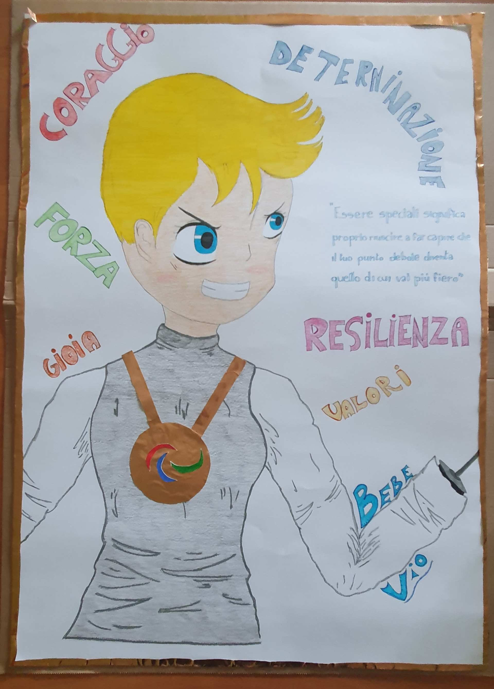

Bebe Vio
Beatrice Vio, soprannominata con il nome di Bebe, è un'atleta italiana di 23 anni, campionessa mondiale ed europea in carica di fioretto individuale paralimpico. Bebe nacque a Venezia il 4 marzo del 1997. Fin da bambina è sempre stata vivace e piena di interessi, tra cui la scuola, il disegno, gli Scout e soprattutto la scherma. Infatti, Bebe pratica la scherma da quando aveva sei anni! All’età di undici, a causa di una grave infezione chiamata meningite, le vennero purtroppo amputate le gambe e gli avambracci. Però, solo dopo un anno, poté ricominciare la sua amata scherma grazie a delle protesi che potevano mantenere il suo fioretto. Da allora è apparsa come testimonial per diffondere la conoscenza della scherma su sedia a rotelle. Nel 2009 la famiglia di Beatrice Vio fondò art4sport, ONLUS di sostegno all'integrazione sociale tramite la pratica sportiva dei bambini disabili.
Beatrice Vio is an Italian athlete, called Bebe by her supporters. She is 23 years old and she is an international and European champion of individual paralympic fencing. Bebe was born in Venice on March 4th, 1997. Since she was a child, she has always been lively and full of interests, for example for school, art, scouts…but mostly for fencing: Bebe started practicing fencing at the age of 6! When she was eleven, she was unfortunately affected by a big infection called meningitis and they had to amputate her legs and her forearms. But, after only one year, she started her beloved fencing again thanks to some prosthesis that could hold her foil. And she became a champion! From there on, she became one of the most important testimonials to make people know about fencing in a wheel chair. In 2009, Beatrice’s family founded art4sport, an ONLUS to support the social integration of disabled children through sports.
Image Gallery
